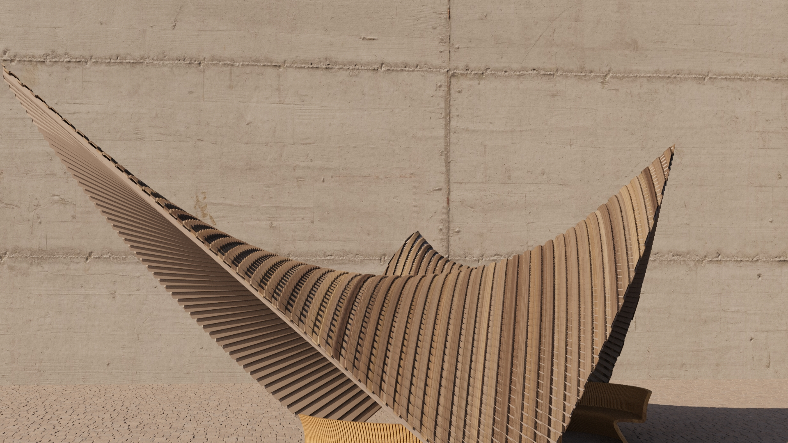
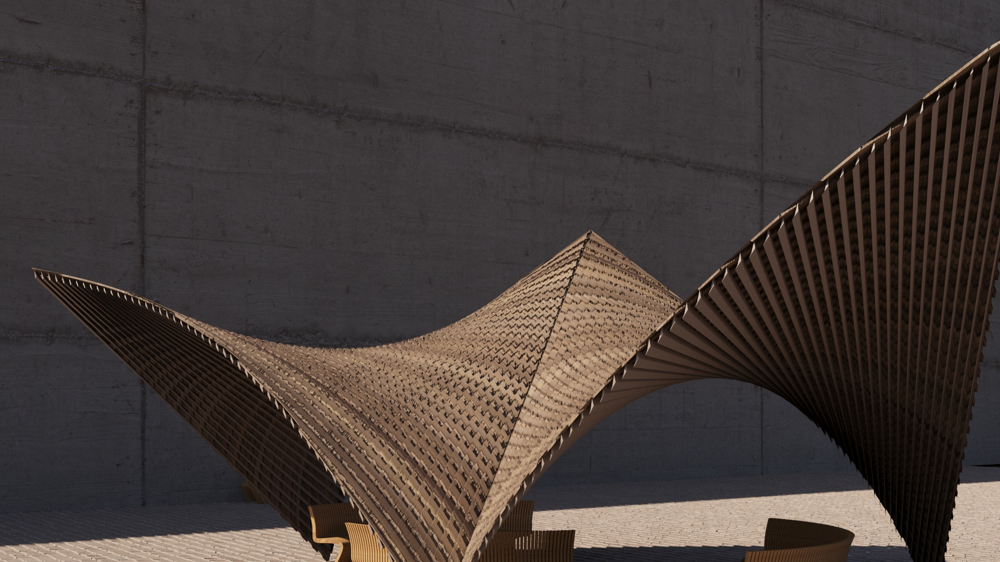
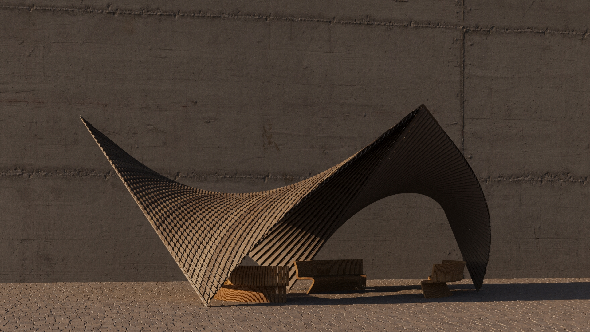
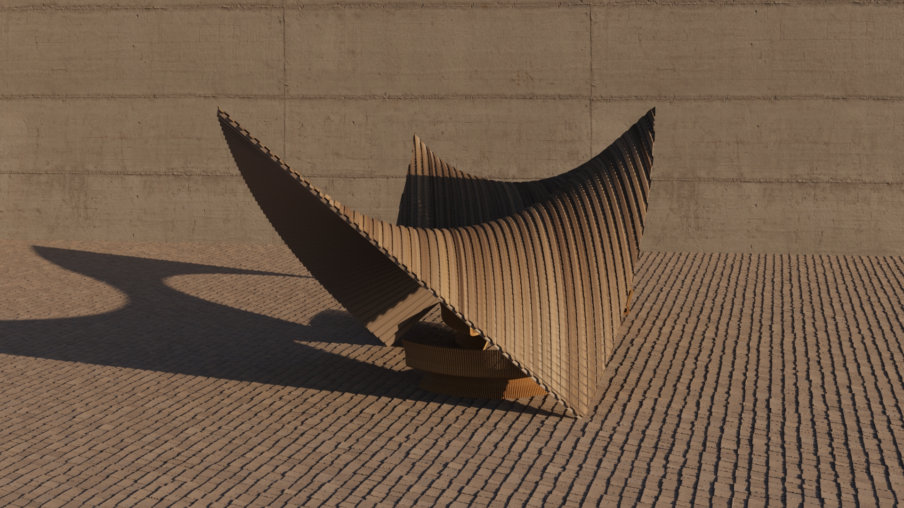
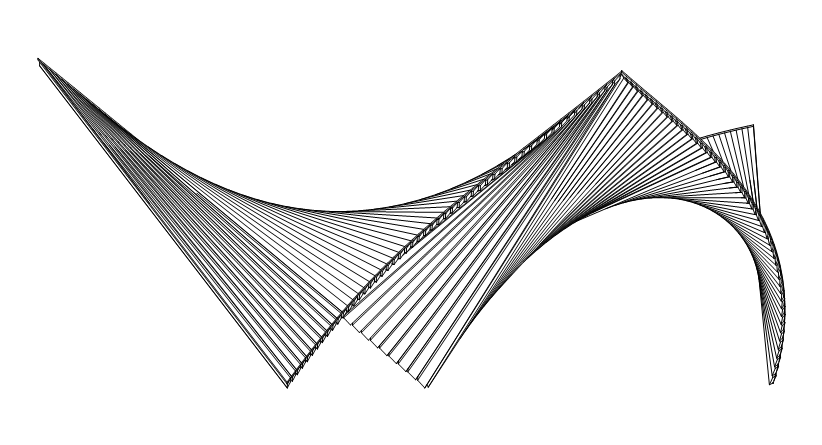

Навес для детской площадки // МАФ
В основе проекта лежит математическая логика распределения элементов. Форма плавно трансформируется из классической арки в раскрытый навес-инверсию, оптимально распределяя затенение площадки в течение дня.




01 / Архитектурно-конструктивный аспект
В основе проекта лежит простая идея: создать сложную, красивую «волну» без использования дорогих гнутых деталей. Навес собран из обычных плоских деревянных досок (ламелей). Каждая следующая доска просто немного сдвинута и повернута по отношению к предыдущей. За счет этого последовательного шага и получается плавная, динамичная форма. Она отлично защищает площадку от палящего солнца и создает красивую тень в виде рисунка на земле, которая меняется в течение дня.